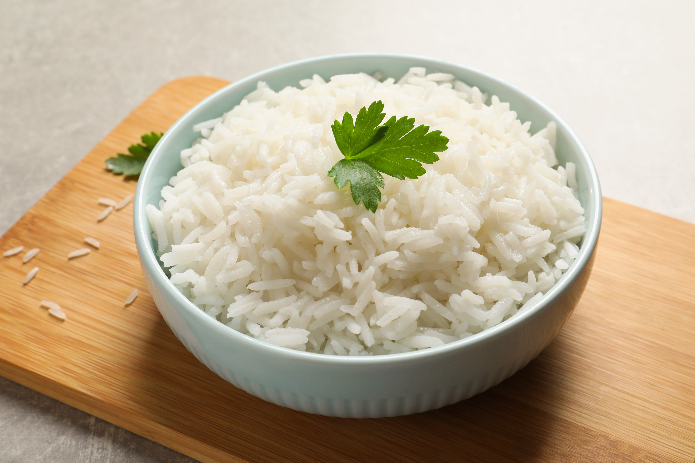

Pagina Principal
Como preparar arr

Descripcion
Esta es la receta de un arroz casero
Ingredientes
- Arroz - 500g
- Aceite - 400ml
- Agua - 600ml
- Sal - al gusto
Pasos
- Se pone a hervir el agua.
- Se agrega sal al gusto
- Se pone el arroz y el aceite.
- Dejamos que se seque el agua y tapamos el arroz a baja mecha.
- Se voltea el arroz dependiendo de la consistencia que queremos.